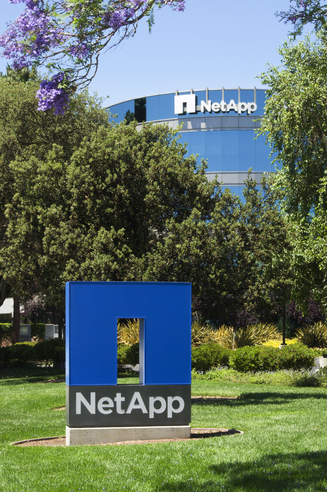

Executive Summary
On July 16, 2026, NetApp acquired DataPelago, an AI data infrastructure startup. The price was not disclosed, and DataPelago will operate as a wholly owned subsidiary. With the deal, NetApp cast itself as the company that delivers "true zero-copy activation of enterprise data." The premise is clear: the real bottleneck in the AI era is not the GPU but the speed at which data can be prepared, governed, and made usable. If that diagnosis holds, what gets unsettled is not a single storage product but the whole order in which data is handled.
DataPelago's Nucleus engine queries and transforms data across CPUs and GPUs where it already lives, instead of shipping it off to a separate compute cluster. And NetApp is not moving alone. Dell, HPE, VAST Data, and Everpure are each heading in the same direction by different routes. Storage spending in the first quarter of 2026 jumped 22.7% year over year, and that money flowed toward platforms that make data "AI can use immediately."
For Pebblous readers, this event is more than an acquisition headline. It is the moment when "AI-ready data" — this blog's signature theme — is promoted from a single step inside a pipeline to a property of the storage layer itself. This piece traces that promotion and asks what it hands off from data quality and governance work, and what it still leaves to people.
Key Numbers
Sources: NetApp press release · benchmarks via Blocks&Files · spending figure via Forbes
These four numbers are the spine of this piece. The first two show what processing data at the storage layer means for performance and cost; the last two show that this is an industry-wide structural shift, not one vendor's marketing.
Up to 10x
Nucleus speedup
vs. NVIDIA cuDF: 10.5x project, 10.1x filter
1/2 to 1/3
Processing cost
vs. legacy compute, per DataPelago
+22.7%
Storage spending surge
Q1 2026 year over year (Forbes)
$75M+
DataPelago funding raised
Founded 2021, through acquisition
NetApp Acquires DataPelago
NetApp, which calls itself the "intelligent data infrastructure company," announced its acquisition of DataPelago on July 16, 2026. Based in Mountain View, California, DataPelago is an AI data infrastructure startup known for an approach that removes the data-processing bottleneck in AI and analytics workloads. The price was not disclosed, and DataPelago becomes a wholly owned subsidiary of NetApp. The company framed the deal as the latest in a run of expansions that includes partnerships with Cisco, Google Cloud, Red Hat, and SK Telecom.

NetApp's own framing of the problem captures the character of the deal. "AI is the defining platform shift of our time, yet enterprises are realizing the biggest bottleneck lies in preparing, governing, and activating data fast enough to feed it into AI." The bottleneck, in other words, is not compute capacity but the speed of getting data into a usable state.
Sham Nair, NetApp's chief product officer, described the heart of the deal this way: DataPelago's Nucleus engine brings software-defined acceleration directly to the storage layer, processing data across CPUs and GPUs so that enterprises can prepare, govern, and activate data for AI without moving it. He called this "true zero-copy activation." Rajan Goyal, DataPelago's founder and CEO, responded that the deal was a chance to combine "our mission to remove the data-processing bottlenecks that hold AI innovation back from its potential" with the industry's leading data infrastructure portfolio.
The key phrase is "without moving it." Until now, enterprise data has sat in storage while AI had to bulk-copy it over to wherever the GPUs are before training or analysis could begin. What NetApp bought is the technology that erases that copy step, letting data be used by AI right where it already sits.
Inside Zero-Copy Activation
DataPelago unveiled Nucleus when it came out of stealth in October 2024, calling it "the world's first universal data-processing engine." Its structure splits into two layers. One is an accelerated-computing virtual machine that uses an instruction set specialized for data operations to unify heterogeneous hardware like CPUs and GPUs under a single abstraction. The other is DataOS, which places each operation on whichever hardware resource fits it best at that moment. Regardless of whether data is structured, semi-structured, or unstructured, it queries and transforms the data where it is stored — rather than moving it to a separate compute cluster — and prepares it for AI.
The performance claims are specific. DataPelago says it runs up to 10x faster than legacy compute at half to one-third the cost. In benchmarks against NVIDIA cuDF, it reported up to 10.5x acceleration on project operations, 10.1x on filter, and 4.3x on aggregate. In March 2026, before the acquisition, Fast Company ranked DataPelago fourth among the "world's most innovative companies" in the data science category.
Placing the two data paths side by side makes it plain what the word "zero-copy" erases.
That this direction is no accident shows in the founder's résumé. Rajan Goyal is a Stanford-trained engineer who has worked on accelerated computing for more than two decades, and he served as CTO of Fungible, a data-center infrastructure chip company that Microsoft acquired in 2022. Holder of more than 150 patents, he founded DataPelago in 2021 as an extension of the same conviction: bring the computation to where the data lives. NetApp has now bolted that muscle onto its own storage.
Not NetApp Alone
Reading this deal only as one company's gambit sees half the picture. Across 2026, the entire storage industry is sending the same message: the axis of competition has moved from capacity and performance to data readiness, governance, and AI-pipeline automation. The approaches differ from company to company, but the destinations overlap.
- • Dell leads with the NVIDIA ecosystem and "AI factory" deployment counts, pairing them with indexing of billions of unstructured files, governed pipeline integration, and a Starburst-based GPU-accelerated SQL engine.
- • HPE attaches data to its post-Juniper narrative of hybrid cloud and networking.
- • VAST Data leads with an architecture designed from the ground up for AI workloads and a roster of hyperscale reference customers.
- • Everpure (formerly Pure Storage) released a beta of "Data Stream," an automation system that keeps feeding data to GPU clusters without human hands in the loop.
The number that backs up the claim that this is structural, not marketing, is spending. Forbes' Steve McDowell reported that first-quarter 2026 storage spending jumped 22.7% year over year, diagnosing that enterprises had poured money into GPUs only to see AI stall — and expensive compute sit idle — because of fragmented, ungoverned data. The extra spending flowed toward "platforms that make data AI can use immediately, safely and fast." Analyst Rob Stretch suggested DataPelago could evolve into a connective layer bridging NetApp's file and object storage, multimodal enterprise data, and modern analytics engines like Apache Spark.
Step back and the front line splits in two. Infrastructure vendors like NetApp push functions upward from the storage layer, while application platforms like Palantir reach downward toward the data. Both directions are closing in at once on the territory of discovering, cataloging, sharing, and controlling access to data. NetApp's acquisition is one move on the lower front. That is why this event reads, beyond an individual deal, as a signal that the very place where data sits has become the arena of competition. The "promotion of AI-ready data" that the next section covers is just another name for this shift of stage.
From Chore to Infrastructure Property
Here is where the point that matters most to Pebblous readers opens up. Until now, "AI-ready data" has usually been treated as one step inside a pipeline — one of several stages that collect, clean, label, and hand off for training. That step always began only after the data had been moved somewhere. What NetApp's acquisition shows is the direction in which that work gets absorbed into a property of the storage layer itself. It is a shift from "move it to refine it" to "activate it where it sits."
This promotion shifts the center of gravity of the work. The effort of moving data, of managing copies, of checking that moved data has not drifted from the original — all of it shrinks. When the storage layer hands out data already in a form AI can read, the job of teams that once stood up separate processes just to prepare it gets lighter. Up to here, this is clear progress.
Where Do Quality and Governance Go?
So where do data quality diagnosis, cleaning, and governance — which have stood as separate steps until now — go? The fact that the storage layer activates data quickly does not mean it also decides what is right and what is wrong in that data. If anything, the faster activation gets, the greater the risk that bad data spreads faster and wider. Infrastructure removes the effort of moving data. It does not remove the effort of judging whether this data may be used, or whether this value can be trusted.
Some caution is warranted. Neither the price nor the integration roadmap has been disclosed. When and in what form Nucleus lands across NetApp's storage lineup is not settled either. And what "zero-copy" erases is the cost of moving data, not governance rules or quality standards themselves. Deciding who may access which data, and which values are accurate and complete, remains the province of people and policy. The storage layer can apply those rules faster, but it will not write them for you.
So the conclusion this event leaves behind is close to a paradox. The more infrastructure prepares data on your behalf, the more the value of knowing what to prepare goes up. As the hands that move and refine data get automated, the eyes that sort which data is usable and which is dangerous move into the bottleneck's new seat.
Editor's Note. This is exactly why, when Pebblous talks about AI-ready data, we stress "diagnose first, then refine" — surface what the problem is before fixing it. The "built-in preparation" that NetApp's acquisition sketches pairs with that order rather than clashing with it. The more the storage layer builds preparation in, the more the diagnosis that decides what to prepare does not disappear but moves to the front. If infrastructure takes on activation, then confirming that the activation points at the right data is the next layer up. That is precisely where our attention sits.
References
Official Announcements
- 1.NetApp. (2026). "NetApp Establishes Itself as the Company That Makes Zero-Copy Activation of Enterprise Data for AI Real." NetApp Newsroom. — Official acquisition announcement with quotes from Syam Nair and Rajan Goyal.
- 2.DataPelago. (2024). "DataPelago Launch Announcement — Universal Data Processing Engine." DataPelago. — Stealth-exit announcement of Nucleus's two-layer architecture.
Industry Coverage
- 3.HPCwire / BigDATAwire. (2026). "NetApp Acquires DataPelago, Making Data AI-Ready at the Infrastructure Layer." HPCwire.
- 4.Blocks & Files. (2026). "NetApp buys DataPelago to become full-stack AI data infrastructure provider." Blocks & Files. — Source of the Nucleus benchmark figures.
- 5.TechTarget. (2026). "NetApp-DataPelago deal ups AI data management ante." TechTarget (SearchStorage). — Analyst commentary from Rob Strechay.
- 6.McDowell, S. (2026). "Enterprise Storage Is Rebuilding Itself Around AI-Ready Data." Forbes. — Source of the 22.7% Q1 2026 storage-spending surge figure.
- 7.NAND Research. (2026). "Why NetApp Acquired DataPelago: Nucleus and Its Enterprise AI Strategy." NAND Research. — Comparison of Dell, HPE, VAST Data, and Everpure.
- 8.Pulse2. (2024). "DataPelago Universal Data Processing Engine And $47 Million Funding Revealed." Pulse2. — Early funding and founder background.